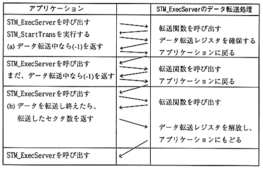

・
・ / * Prefetch stream * /
STM_SetExecGrp (NULL); / * Put the drive in a pause state * /
GFS_NwFread(………);
while (1) {
if (GFS_NwExecOne (gfs) == GFS_SVR_COMPLETED) / * Read file * /
break;
STM_ExecTrans (stm); / * Transfer stream data * /
}
STM_SetExecGrp (grp); / * Restart reading the stream * /